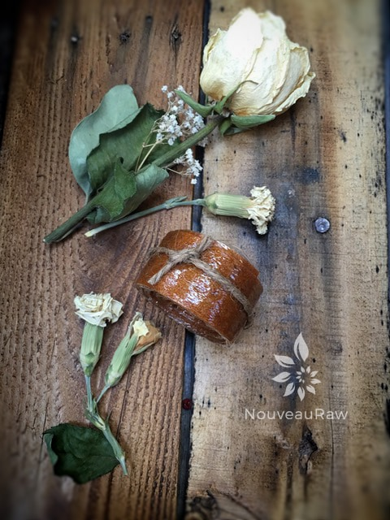
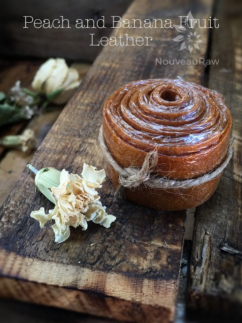
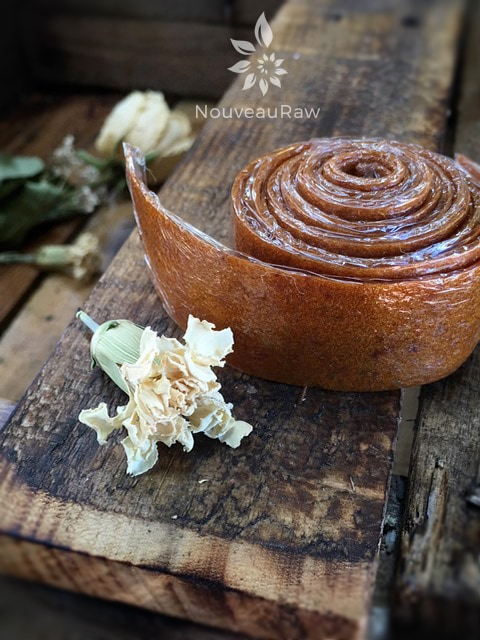
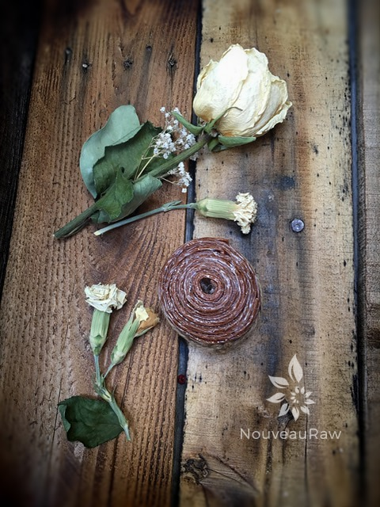

Peach and Banana Fruit Leather

~ raw, vegan, gluten-free, nut-free ~
I believe in having fun in the kitchen. Because when you do, love and joy will be infused into your recipes. That may seem like a bit of a stretch for some to believe, but test it out, I have found it to be so true.
So when it came time to make this fruit leather I decided to have a little fun and decorate it with banana chips.
We are lovers of banana chips, and every time I browse through the produce department at our local grocery store, I always ask if they have over-ripe bananas. Many times they do, and I can get a 40lb box for $5-$10! Can’t go wrong with that kind of pricing. :)
Whereas I didn’t get that good of a deal on these bananas, I did walk away from our local fruit stand with a smokin’ deal on peaches. I got a full case for $10. They were set aside because they were either “over” ripe or had some flaws. They were PERFECT for making leathers with. Never be afraid to ask for a deal on really ripe fruit, there is so much that you can do with them. Leathers are a great start…
Ingredients:
yields 5 cups puree
Puree:
- 5 cups fresh sliced peaches
- 2 large ripe bananas
- 1/2 tsp ground Ceylon cinnamon
- 1/4 tsp liquid stevia
Banana chips:
- 1 ripe banana (sliced into thin discs)
- 2 tsp lemon juice
- 2 tsp coconut crystals
- 1/2 tsp ground cinnamon
Preparation:
Banana chips:
- Slice banana into thin discs. Don’t cut them so thin that they fall apart when handling. Place in a bowl.
- Add lemon juice and with your fingers, gently toss the bananas, coating them with the lemon juice.
- Sprinkle the raw coconut crystals and cinnamon on the bananas and again toss till coated.
- Using the teflex sheet that comes with the dehydrator, lay the banana chips out in a single layer.
- Dehydrate at 145 degrees (F) for 1 hour, then reduce the temp to 115 degrees (F) and dry for about 4 hours. See # 5 below in preparation for leather.
Leather:
- Select RIPE or slightly overripe bananas and peaches that have reached a peak in color, texture, and flavor. (use bananas with brown speckled peels)
- Prepare the peaches; wash, dry, and remove stones.
- Puree the peaches, bananas, cinnamon, and stevia, in the blender or food processor until smooth.
- Taste and sweeten more if needed. Keep in mind that flavors will intensify as they dehydrate.
- When adding a sweetener do so 1 tbsp at a time, and reblend, tasting until it is at the desired taste.
- It is best to use a liquid type sweetener. Don’t use a granulated sugar because it tends to change the texture.

Spread the fruit puree on teflex sheets that come with your dehydrator. Pour the puree to create an even depth of 1/8 to 1/4 inch. If you don’t have teflex sheets for the trays, you can line your trays with plastic wrap or parchment paper. Do not use wax paper or aluminum foil.
- Lightly coat the food dehydrator plastic sheets or wrap with a cooking spray, I use coconut oil that comes in a spray.
- When spreading the puree on the liner, allow about an inch of space between the mixture and the outside edge. The fruit leather mixture will spread out as it dries, so it needs a little room to allow for this expansion.
- Be sure to spread the puree evenly on your drying tray. When spreading the puree mixture, try tilting and shaking the tray to help it distribute more evenly. Also, it is a good idea to rotate your trays throughout the drying period. This will help assure that the leathers dry evenly.
- Dehydrate the fruit leather at 145 degrees (F) for 1 hour, reduce temp to 115 degrees (F) and continue drying for about 4 hours. Transfer the semi-dried banana chips onto the leather, gently pressing them in. Continue drying for about 4-6 hours or until done. Flip the leather over about halfway through, remove the teflex sheet, and continue drying on the mesh sheet. The finished consistency should be pliable and easy to roll.
- Check for dark spots on top of the fruit leather. If dark spots can be seen it is a sign that it is not completely dry.
- Press down on the fruit leather with a finger. If no indentation is visible or if it is no longer tacky to the touch, the fruit leather is dry and can be removed from the dehydrator.
- Peel the leather from the dehydrator trays or parchment paper. If it peels away easily and holds its shape after peeling, it is dry. If it is still sticking or loses its shape after peeling, it needs further drying.
- Under-dried fruit leather will not keep; it will mold. Over-dried fruit leather will become hard and crack, although it will still be edible and will keep for a long time
- Storage: to store the finished fruit leather…
- Allow the leather to cool before wrapping up to avoid moisture from forming, thus giving it a breeding ground for molds.
- Roll them up and wrap them tightly with plastic wrap. Click (here) to see photos of how I wrap them.
- Place in an air-tight container, and store in a dry, dark place. (Light will cause the fruit leather to discolor.)
- The fruit leather will keep at room temperature for one month, or in a freezer for up to one year.
Culinary Explanations:
- Why do I start the dehydrator at 145 degrees (F)? Click (here) to learn the reason behind this.
- When working with fresh ingredients, it is important to taste test as you build a recipe. Learn why (here).
- Don’t own a dehydrator? Learn how to use your oven (here). I do however truly believe that it is a worthwhile investment. Click (here) to learn what I use.



© AmieSue.com